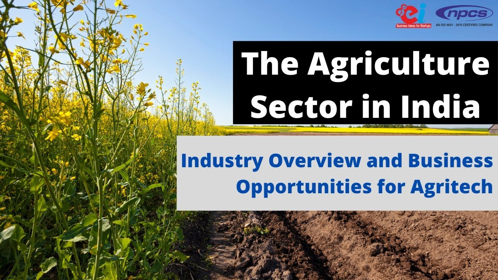

4.Give Priority for Agriculture.

In the medium term, action to promote comprehensive and balanced agricultural development will require a focus on
three priority areas: increasing food supply and reducing hunger; extending the area under sustainable land management
and reliable water control systems; and improving rural infrastructure and market access.
Agriculture in the climate change action plan
The agricultre sectore offers great potential for synergies among the objectives of food security, poverty, reduction,
adaptation and mitigation.
Adaptation is first priority, but many actions have mitigation benifits-Climate smart agricultre can help meet both
adaptation and mitigation goals.
Priority area for investment
1. Improve agricultural productivity in poor rural communities
2. Develop and conserve natural resources
3. Expand rural infrastructure and market access
4. Strengthen capacity for knowledge generation and dissemination
5. Ensure access to food for the most needy

Priority Areas for Support
1. Enhancing agricultural productivity, competitiveness, and rural growth:
Promoting new technologies and reforming agricultural research and extension: Major reform and strengthening
of India’s agricultural research and extension systems is one of the most important needs for agricultural growth.
Developing markets, agricultural credit and public expenditures: India’s legacy of extensive government involvement
in agricultural marketing has created restrictions in internal and external trade, resulting in cumbersome and
high-cost marketing and transport options for agricultural commodities.
2. Poverty alleviation and community actions:
While agricultural growth will, in itself, provide the base for increasing incomes, for the 170 million or so
rural persons that are below the poverty line, additional measures are required to make this growth inclusive.
For instance, a rural livelihoods program that empowers communities to become self-reliant has been found to be
particularly effective and well-suited for scaling-up.
3. Sustaining the environment and future agricultural productivity:
In parts of India, the over-pumping of water for agricultural use is leading to falling groundwater levels.
Conversely, water-logging is leading to the build-up of salts in the soils of some irrigated areas. In rain-fed
areas on the other hand, where the majority of the rural population live, agricultural practices need adapting
to reduce soil erosion and increase the absorption of rainfall. Overexploited and degrading forest land need
mitigation measures.
World Bank Support:
The Bank’s Agricultural and Rural Development portfolio is clustered across three broad themes with each project,
generally, showing a significant integration of these themes:
1.Agriculture, watershed and natural resources management
2.Water & irrigated agriculture
3.Rural livelihood development